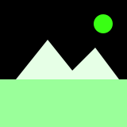

On the Ice
Amid white silence, you find a figure upon the floe. It speaks of loneliness and choice. The wind asks for your answer.
↩️ Back to Home
Images are original SVGs created for this project and released under
CC0 1.0 Public Domain Dedication.
Attribution: “SVG by the author (student) / ChatGPT-assisted”.